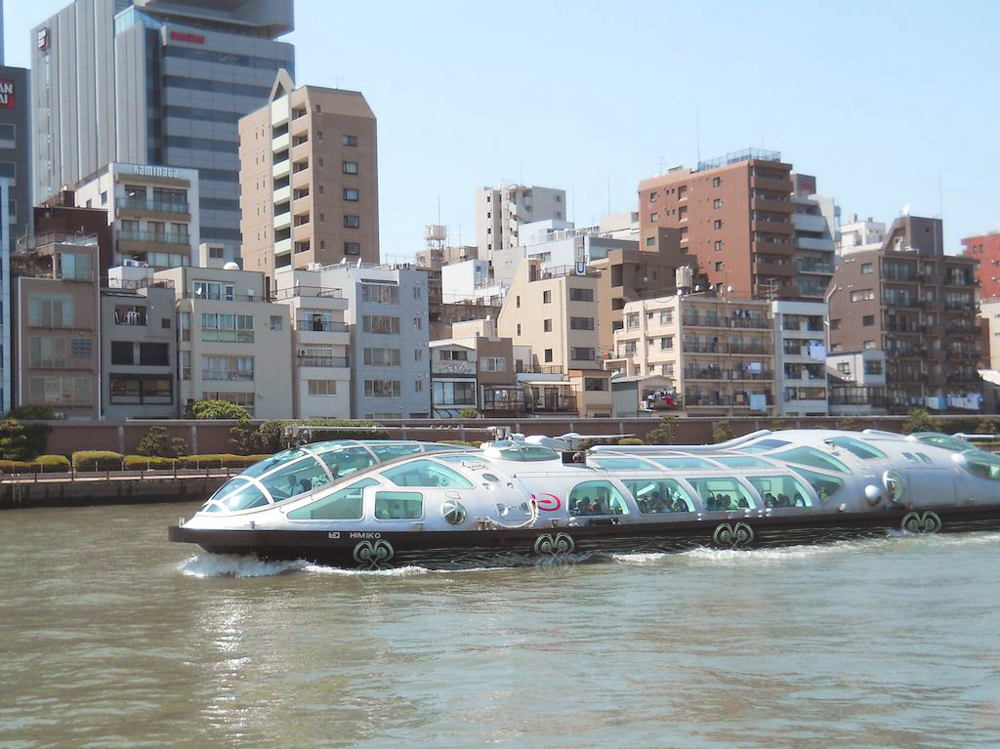
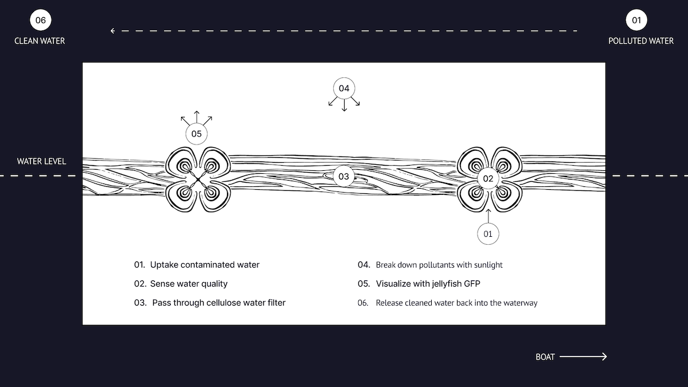

By 2043, Tokyo is expected to grow 7.1% in population size, with the goals of becoming a pedestrian friendly city and increasing its public land use. How can we preserve the city’s cultural heritage while moving into the future?
01. SHINKIBA HISTORY
Shinkiba was founded in 1930 and its name means “new lumberyard,” distinguishing itself Kiba ("lumberyard”), which was originally the main center of the Tokyo’s lumber industry after a 1657 fire. Between 1957 and 1966, the Shinkiba area was used as the Tokyo Bay No. 14 Landfill and by 1972, the timber industry from Fukagawa had moved in. Land reclamation was finally completed in 2021. Today, Shinkiba is known for evening entertainment venues, industry and warehouses, and green areas.
02. FUTURE OF TOKYO
By 2030, Tokyo’s population is expected to increase 7.1% in population size, with a 52% increase in population of foreign nationals. Because of this, the local government aims for the city to become more pedestrian friendly by reclaiming and pedestrianizing existing transportation infrastructure to grow into a more accessible and walkable megacity.
(Source: Metropolis)
Left: Senrogai ("Railroad Town") is a 1.7 development on the former Odakyu tracks designated for shopping, markets, traditional ryokan, hotel, etc.
Right: Nihonbashi is one of the many waterways that were destroyed by Japan's post-war industrialization due to manufacturing, human waste, and railroad construction that prevented pedestrians from using the river space.
Permeability is how easily pedestrians, cyclists, or drivers move without being restricted by urban forms - roads decrease permeability. Street hierarchy is expected to be reordered such that large developed areas are broken up by smaller roads, like those in Ginza.
03. CONCEPT DEVELOPMENT
Thus, there are 3 main problems with the Sumida River, one of the two main rivers that flow through Tokyo.
-
Highways are blocking riverwalks - Tokyo’s lively, human-centric waterways were effectively destroyed by Japan’s post-war industrial boom. Toxic materials from manufacturing, human waste, and industrialization from when highways, railroads and flood protection measures rendered the waterways useless to pedestrians.
-
Waterways are neglected - The biggest obstacle in repopulating riverwalks with pedestrians is not money, but reengaging residents with waterways after decades of neglect. Thus, there is a need for education and community engagement.
-
Water is left stagnant - Polluted by years of sewage and industrial runoff, the planting of concrete support columns into rivers caused further stagnation and pollution of the water, as well as making the waterways unusable to many commercial boats.

(Wood production displayed at the Wood & Plywood Museum in Shinkiba)
Researchers at Chalmers University of Technology, Sweden, have developed a new bio-based material, a form of powder based on cellulose nano-crystals to purify water from pollutants, including textile dyes. When the polluted water passes through the filter with cellulose powder, the pollutants are absorbed, and the sunlight entering the treatment system causes them to break down quickly and efficiently.

(Jellyfish seen in Tokyo Bay)
Green Fluorescent Protein (GFP) which is extracted from the jellyfish can be used as biosensors to detect the pollution in the water.

Kirage is a boat attachment that utilizes an intuitive bio-signal system to monitor water quality and purifies water while on the move. In this project, we researched the history of Shinkiba in Kōtō, Tokyo and current demographic trends in Tokyo to learn how the past informed the present and to create a speculative design that brings the area into the next 20 years while maintaining cultural uniqueness.
Tokyo is a city built on water - on top of more than 120 natural rivers. Originally, these waterways were a place of civic pride. However, after the 1964 Olympics, water quality worsened so highways were built to cover them, leading to pollution buildup. Since then, there have been many attempts to reconnect with the water. In the 1980s, manmade islands were created in Tokyo, in addition to efforts to renovate bridges and policies to combat the heat island phenomenon. Kirage aims to bring back historic civic pride, develop technologies that are built within the wood industry, and use locally-sourced jellyfish as a resource for tourists and everyday commuters on river cruises or public transportation.
→ Summer 2023 (4 weeks)
→ International Project
→ Instructors: Junichi Yamaoka, Matthew Waldman
→ Collaborators: Samantha I-Han Hsieh, Ariane Lucchini, Lili Mineta, Yifei Zhang